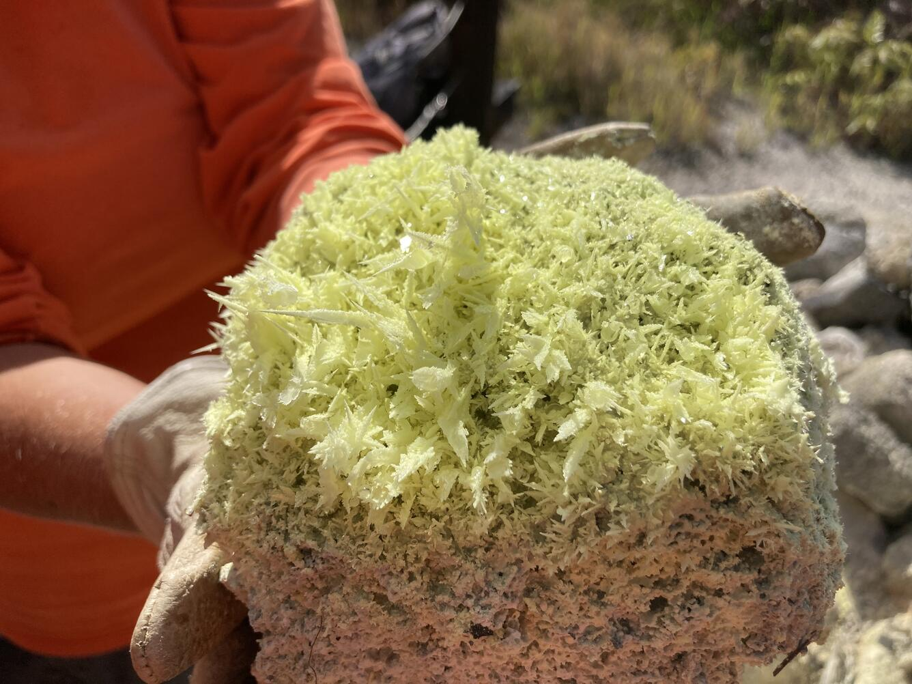
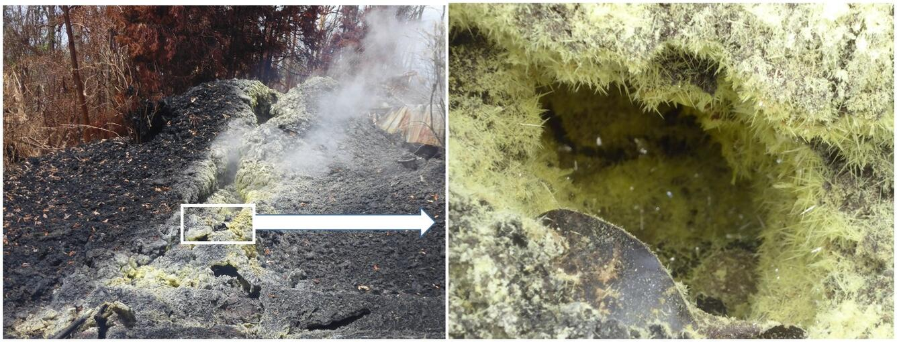
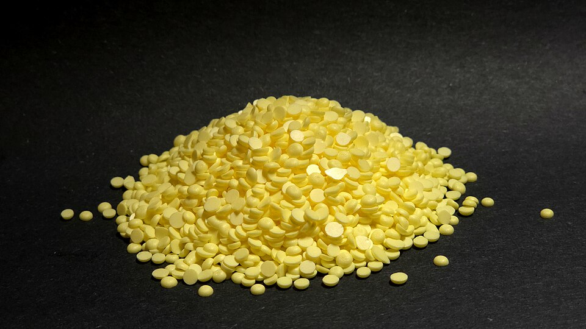

A — Principais características do elemento químico
Enxofre
S
16
Sólido em temperatura ambiente
Aparência ou coloração
O enxofre apresenta diferentes formas alotrópicas. A forma mais comum aparece como cristais ou pó de cor amarela. Como mineral, pode apresentar tonalidades amarelas, amarelo-esverdeadas, acinzentadas ou avermelhadas e possui brilho resinoso.
Principais propriedades
É um elemento não metálico, pertencente ao grupo 16 da Tabela Periódica. Entre suas propriedades físicas, apresenta ponto de fusão de aproximadamente 115,21 °C e ponto de ebulição de aproximadamente 444,61 °C. A forma mais comum do enxofre elementar está associada a moléculas S₈. A fonte da USP também destaca que o enxofre é mau condutor de calor e queima com facilidade em uma chama.

Fonte: U.S. Geological Survey (USGS).
B — História da descoberta
Antiguidade
O enxofre é conhecido e utilizado pela humanidade desde a Antiguidade. Por isso, não possui um único descobridor nem uma data específica de descoberta.
Química moderna
Com o desenvolvimento da Química moderna, cientistas passaram a estudar o elemento de forma mais detalhada.
Antoine Lavoisier
Antoine Lavoisier reconheceu o enxofre como um elemento químico.
Pesquisas posteriores
Posteriormente, outros pesquisadores continuaram estudando suas propriedades e sua composição, contribuindo para a compreensão científica do enxofre.
C — Ocorrência na natureza
O enxofre ocorre na natureza tanto na forma elementar, ou seja, como enxofre nativo, quanto combinado com outros elementos.
Na forma nativa, pode ser encontrado em bordas de vulcões, devido à deposição de gases emanados por fumarolas. Também pode ocorrer em veios associados a sulfetos metálicos, como produto da oxidação desses minerais, e em rochas sedimentares associadas a anidrita, gipsita e carbonatos.
O enxofre também está presente em diversos minerais. Entre os exemplos citados nas fontes estão a pirita, a galena, a gipsita e a esfalerita.

Fonte: U.S. Geological Survey (USGS).
D — Uso no cotidiano
Produção de ácido sulfúrico
Grande parte do enxofre é utilizada na produção de ácido sulfúrico, uma das substâncias químicas mais importantes para a indústria.
Fertilizantes
O ácido sulfúrico é utilizado na fabricação de ácido fosfórico e de fosfatos empregados na produção de fertilizantes. Assim, o enxofre está relacionado à agricultura e à produção de alimentos.
Borracha
O enxofre é empregado no processo de vulcanização, que modifica as propriedades da borracha e melhora sua utilidade em diferentes aplicações.
Outros usos
Outros usos citados pelas fontes incluem fungicidas e inseticidas, fabricação de papel, tintas, tecidos e sabões, além de aplicações no processamento do petróleo.

Fonte: Wikimedia Commons.
E — Importância ou riscos
Importância biológica
O enxofre é essencial para os seres vivos. As fontes da Royal Society of Chemistry informam que ele participa da formação de aminoácidos necessários para a produção de proteínas e também está presente em coenzimas.
Importância econômica
O enxofre possui grande importância industrial, principalmente pela produção de ácido sulfúrico e de fertilizantes. A produção e o uso do enxofre também são acompanhados em relatórios recentes do U.S. Geological Survey (USGS), que publica dados sobre minerais e materiais em sua edição de 2026.
Riscos e impacto ambiental
O enxofre e seus compostos não apresentam todos os mesmos riscos. A Royal Society of Chemistry destaca que alguns compostos, como o dióxido de enxofre e o sulfeto de hidrogênio, são tóxicos. Além disso, o dióxido de enxofre liberado na atmosfera pela queima de combustíveis fósseis não purificados pode contribuir para a formação da chuva ácida. Por isso, compostos de enxofre devem ser utilizados com os cuidados e as normas de segurança adequados.
Cuidados necessários
O enxofre e seus compostos devem ser utilizados de acordo com as normas de segurança. É importante evitar a exposição a compostos tóxicos, como o dióxido de enxofre e o sulfeto de hidrogênio, e tomar os cuidados adequados durante sua utilização.
F — Fontes consultadas
-
Royal Society of Chemistry (RSC).
Sulfur — Element information, properties and uses.
https://periodic-table.rsc.org/element/16/Sulfur -
PubChem / National Institutes of Health (NIH).
Sulfur | S (Element).
https://pubchem.ncbi.nlm.nih.gov/element/Sulfur -
Universidade de São Paulo (USP), Instituto de Geociências.
Enxofre — Materiais Didáticos.
https://didatico.igc.usp.br/minerais/elementos-nativos/enxofre/ -
U.S. Geological Survey (USGS).
Mineral Commodity Summaries 2026.
https://pubs.usgs.gov/publication/mcs2026
G — Criação e Orientação
Criadora do site
Eloisa Brandão
Criação e desenvolvimento do site.
Orientadores
Elaine Lima Silva
Allan Vidal